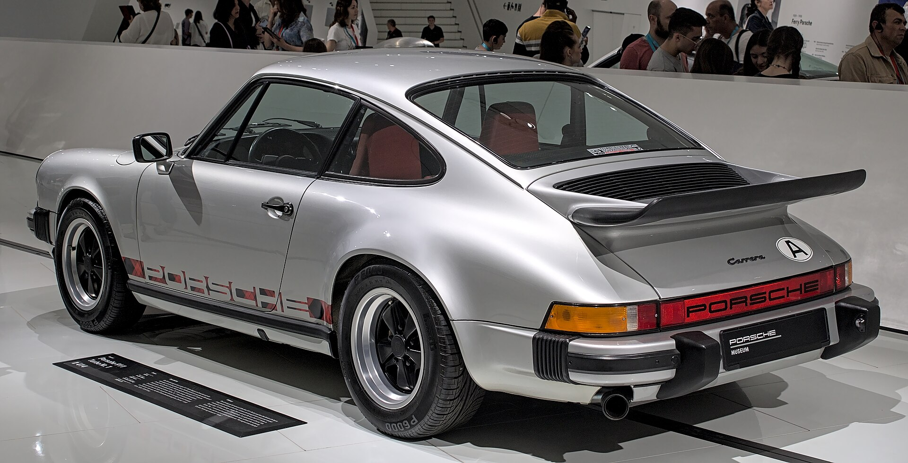
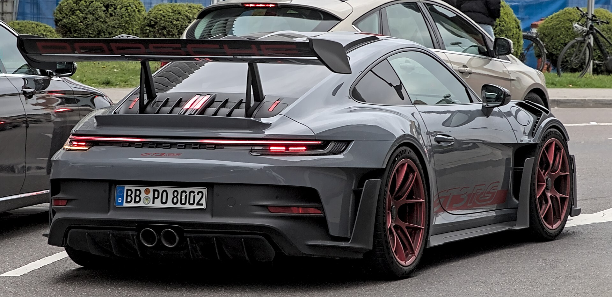
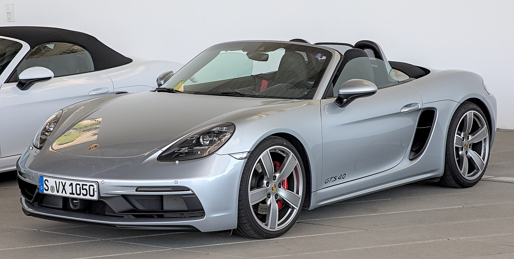
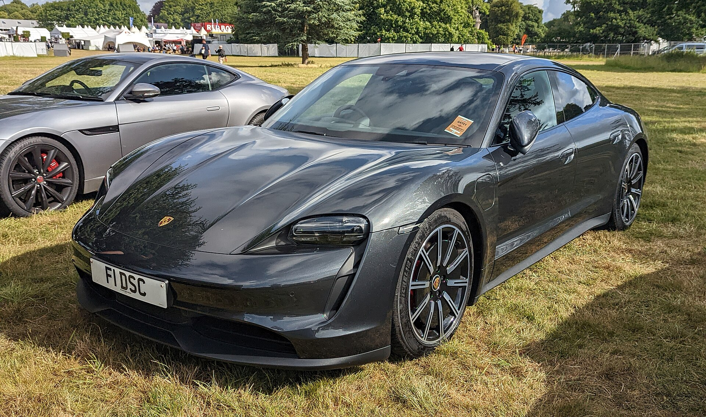
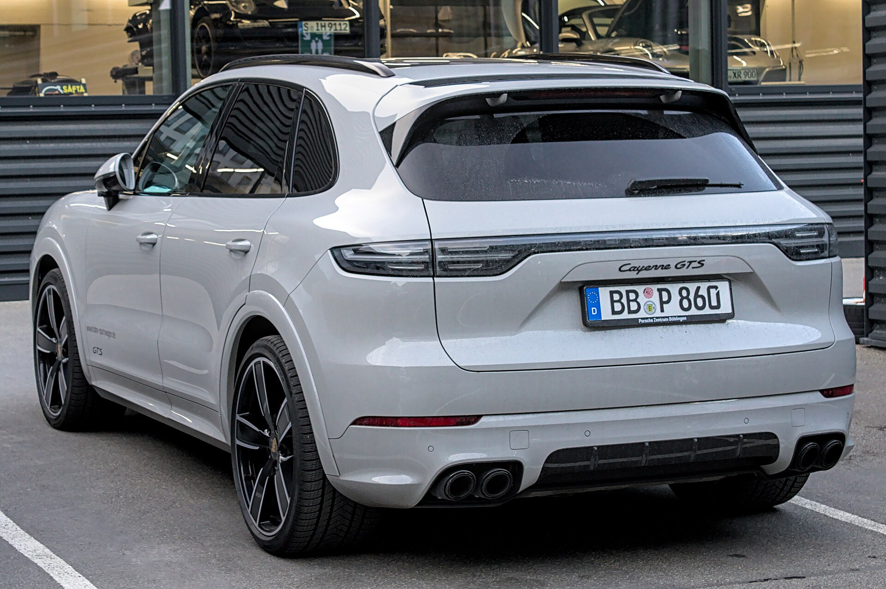
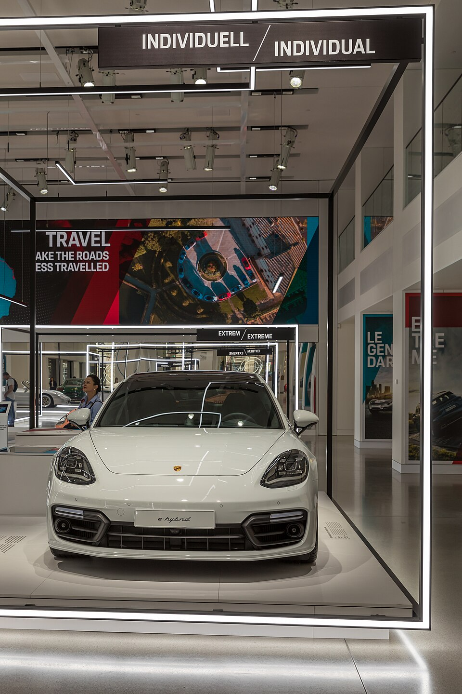
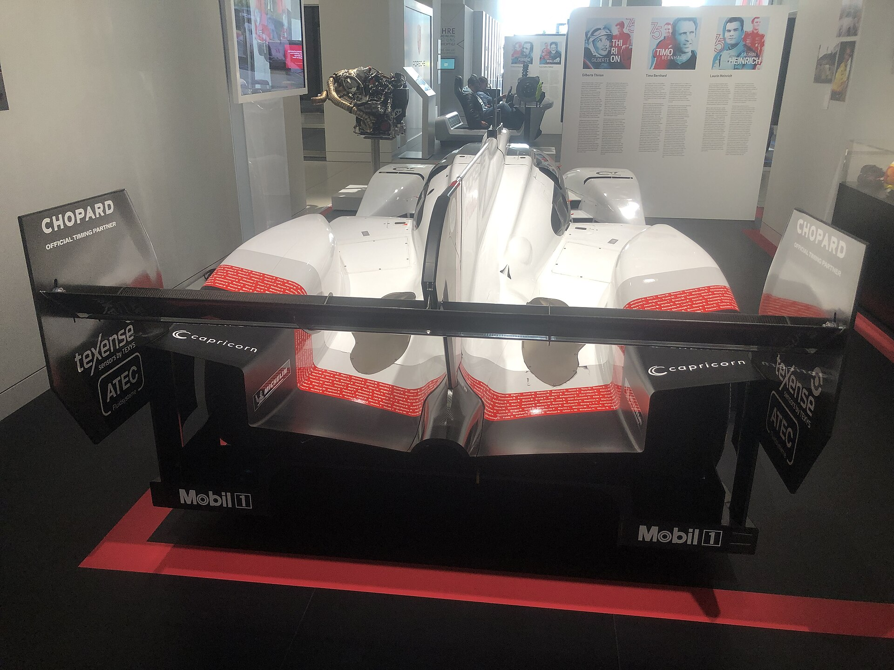

Первый Porsche. Лёгкий, точный, собранный вокруг идеи, что удовольствие от дороги важнее лишних килограммов.
Глава 01
История, которую слышно
Porsche — это идея Фердинанда Порше, которая в 1948 году стала автомобилем. С тех пор марка не гонится за шумом вокруг: она делает машины, которые хочется вести, а не просто показать.
Появляется силуэт, который не устаревает. Задний мотор, крутые фары и характер, который до сих пор задаёт тон всей марке.
От классических купе до Taycan. Бензин, гибрид и электричество — но пропорции и посадка остаются Porsche.

1948год основания
911икона марки
19×побед в Le Mans
Zuffenhausenсердце Stuttgart
Глава 02
Модели: своя скорость для каждого
Как у языка есть типы данных, у Porsche есть свои формы характера. Купе, родстер, гран туризмо, спорткроссовер и электрический гранд-турер.
Икона
911
Эталон марки. Заднемоторная компоновка, посадка «как в перчатке» и силуэт, который читается с любого расстояния. Carrera — для дороги, GT3 — для тех, кому мало обычного дня.

Motorsport
GT3 RS
Антикрыло, воздух и одержимость кругом. Это уже не про комфорт — про то, как далеко можно зайти, оставаясь на номерах.

Родстер
718 Boxster
Среднемоторный диалог с ветром. Короткая база, точный нос и открытое небо — Porsche, который улыбается чаще остальных.

Electric
Taycan
Электричество без потери характера. Низкий, быстрый, с мгновенной тягой — доказательство, что будущее тоже может звучать по-поршевски.

SUV
Cayenne
Кроссовер, который не извинился за то, что он Porsche. Высокая посадка, но всё ещё желание искать дугу, а не только парковку.

Gran Turismo
Panamera
Четыре двери, длинная дорога и ощущение, что ночь между городами принадлежит тебе. Комфорт, который не выключает драйверский инстинкт.
Глава 03
Дизайн как скорость, застывшая в металле
У Porsche узнаваемый почерк: длинный капот, короткие свесы, линия плеча и фары, которые смотрят прямо на тебя.
01
Пропорции важнее декора
Красота здесь не в хроме, а в том, как кузов сидит на колёсах.
02
Свет как подпись
Четыре точки фар и сплошная задняя лента — это уже язык марки, а не просто оптика.
03
Функция, которую видно
Воздухозаборники, диффузор и антикрыло работают. Красота — побочный эффект инженерии.
Глава 04
Трасса пишет легенду
Победы в Ле-Мане, Нордшляйфе и формулах выносливости — не маркетинг. Это лаборатория, из которой 911 и GT-машины возвращаются на дорогу злее и точнее.

919 Hybrid
Прототип, который доказал: гибрид может быть оружием, а не компромиссом. От него к Taycan — прямая линия инженерии: энергия, баланс, скорость без лишнего веса в идеях.
Глава 05
Контакты
Если тоже слышишь в Porsche не просто машину, а характер — пиши.
- GitHub: kemalzeitulaev
- Email: kemalzeitulaev@gmail.com
- Сайт: учебный лендинг о марке Porsche